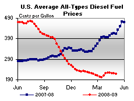

Released on May 6, 2009
(Next Release on May 13, 2009)
Falling Prices Lead to a Reduction in Domestic Oil and Gas Drilling
The oil and gas exploration and production business has seen its share of booms and busts over the years. But what exactly happens to drilling for new wells when prices go on a roller coaster ride? The last 16 months are a great example.
At the beginning of 2008, Baker Hughes reported that there were a total of 1774 oil and gas drilling rigs operating in the United States, of which 18 percent were drilling for oil (316 rigs). This rig count represented a continuation of fairly high and stable drilling levels going back to 2006.
With oil and gas prices increasing rapidly in the first half of 2008, rig counts also rose. Since drilling involves physical and financial commitments that cannot change instantly, the total rig count continued to rise even after prices began to fall in July, reaching a peak of 2031 rigs in mid-September. Drilling rigs dedicated to oil rose for slightly longer, peaking at 442 in early November.
Once rig activity began to fall, it fell rapidly. For the latest available week (May 1), the total rig count for oil and gas stood at 945, down 53 percent from the peak. This is the lowest level since March 2003. For oil drilling alone, the count of drilling rigs fell to 196 for the latest week (a 56 percent decline from the peak).
Does a reduction in the rig count mean a proportional change in production from new oil and gas wells? Not necessarily. As the number of new wells falls, the production per well tends to rise. Operators focus on the most potentially profitable parts of their prospect portfolios, which means not drilling prospects with very high costs or lower expected production rates. As a result, production from new wells would normally fall more slowly than the decline in the rig count.
In a related trend, the movement away from marginal wells in 2008 and 2009 has shown itself partly as a shift in drilling technologies. Earlier in the decade, horizontal wells were a relatively rare, cutting-edge technology designed to tap unconventional gas and oil in deposits with low permeability, like shale. As of the end of 2004, horizontal wells accounted for only 10 percent of the total, up from 5 percent at the end of 2000. Today, horizontal drilling technology continues to advance, but horizontal wells have become a commonplace part of the exploration and production business. They still take longer to complete than traditional wells, but often tap considerably more oil or gas reserves and result in greater additional production (see This Week in Petroleum on the Bakken formation). During the recent decline in rig activity, horizontal drilling has fallen by 41 percent from its peak (in late October). But other types of drilling have fallen considerably further, 60 percent from their 2008 peak. As a result, horizontal drilling rigs now make up 41 percent of the total rig count compared with 25 percent at the beginning of 2008.

Gasoline Prices Move Up as Diesel Prices Continue to Drift Down
The national average price for regular gasoline increased almost 3 cents to $2.08 per gallon. The price was $1.54 less than the price a year ago. Prices increased throughout the Nation, with the exception of the Lower Atlantic portion of the East Coast region where the price was unchanged. The average East Coast price crept up about a penny and a half to $2.05 per gallon. The average price in the Midwest gained the most of any region, climbing over 6 cents to $2.05 per gallon. Increasing a penny, the average price on the Gulf Coast remained the lowest of any region at $1.96 per gallon. In the Rocky Mountains, the price rose by more than two cents to $2.09 per gallon. On the West Coast, the price rose more than a penny and a half to $2.29 per gallon. In California, the average price was $2.36 per gallon.
The national average price of diesel fuel dropped for the third week in a row. The price drifted down about a penny and a half to $2.19 per gallon, $1.96 below last year. Prices in all regions of the country slipped somewhat. On the East Coast, the price dropped a penny and a half to $2.23 per gallon. The Midwest price dropped nearly two cents to $2.12 per gallon, while the average for the Gulf Coast dipped nearly two cents to $2.15 per gallon. The price in the Rocky Mountains moved down by nearly a penny to $2.26 per gallon. The West Coast price also dropped about a penny, to $2.31 per gallon. The price in California fell about half a cent to $2.32 per gallon.
April Propane Build Above Average
Primary stockholders added an above average 5.8 million barrels to the Nation’s supply of propane during April, with inventories reaching an estimated 45.5 million barrels as of May 1, 2009. The average April build over the most recent 5-year period, from 2004 through 2008, totaled 4.6 million barrels. The final week of April saw inventories higher by 2.4 million barrels, with regional gains across all regions except in the combined Rocky Mountain/West Coast region, where inventories remained relatively unchanged. East Coast inventories gained 0.7 million barrels last week, while the Midwest posted a 0.9 million-barrel gain during this same time. The Gulf Coast region saw inventories higher by 0.7 million barrels. Propylene non-fuel use inventories were sharply higher last week with a 0.7 million barrel gain that moved its share of total propane/propylene inventories to 6.8 percent from the prior week’s 5.6 percent share.
Text from the previous editions of “This Week In Petroleum” is now accessible through a link at the top right-hand corner of this page.
| Retail Prices (Cents Per Gallon) | |||||||
|  | |||||||
| Retail Data | Changes From | Retail Data | Changes From | ||||
| 05/04/09 | Week | Year | 05/04/09 | Week | Year | ||
| Gasoline | 207.8 | Diesel Fuel | 218.5 | ||||
| Spot Prices (Cents Per Gallon*) | |||||||||||||||||||||||||||||||||||
 |
|||||||||||||||||||||||||||||||||||
|
|||||||||||||||||||||||||||||||||||
| *Note: Crude Oil WTI Price in Dollars per Barrel. | |||||||||||||||||||||||||||||||||||
| Stocks (Million Barrels) | |||||||
| Stocks Data | Changes From | Stocks Data | Changes From | ||||
| 05/01/09 | Week | Year | 05/01/09 | Week | Year | ||
| Crude Oil | 375.3 | Distillate | 146.5 | ||||
| Gasoline | 212.4 | Propane | 45.497 | ||||